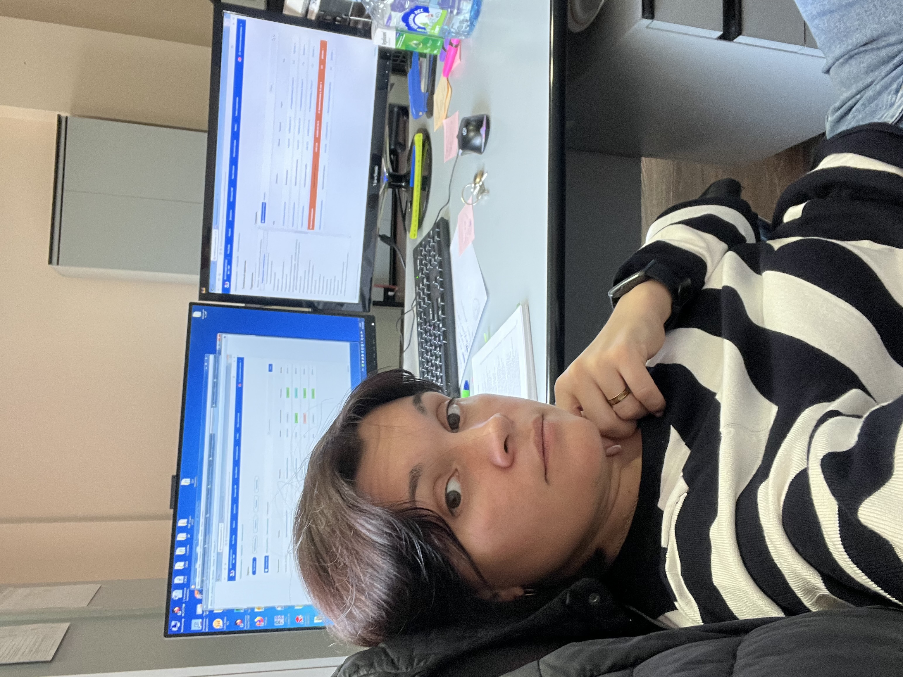

Обо мне
Контактная информация
тел. +79030025753
email: hofnar@yandex.ru
Образование
В 2010 году окончила Институт международных социально-гуманитарных связей по специальности Менеджер государственного и муниципального управления.
Опыт работы
С 2010 года работала в Исполнительной дирекции Пенсионного фонда Российской Федерации. Моя карьера началась с должности ведущего специалиста-эксперта информационно-технического отдале Учебно-методического центра ПФР. Впоследствии после успешного прохождения аттестации была рекомендована на должность заместителя начальника отдела. В должности заместителя начальника отдела занималась ведением текущей документации, техническим сопровождением внутриорганизационных мероприятий, организацией и сопровождением дистанционного обучения сотрудников во всей территории страны, администрированием различных информ систем а также многим другим. Имею две ведомственные награды: "Благодарность Председателя правления ПФР" и "Отличник Пенсионного фонда Российской Федерации"